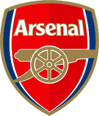

-
Chelsea Football Club

Chelsea Football Club is a professional football club based in Fulham, London, that competes in the Premier League. Founded in 1905, the club's home ground since then has been Stamford Bridge. Chelsea had their first major success in 1955, when they won the league championship. They won various cup competitions between 1965 and 1990.
The club's greatest period of success has been the last two decades, winning 17 major trophies since 1997. Chelsea have won five national league titles, seven FA Cups, five League Cups and four FA Community Shields, one UEFA Champions League, two UEFA Cup Winners' Cups, one UEFA Europa League and one UEFA Super Cup.
Chelsea are the only London club to win the UEFA Champions League, and one of four clubs, and the only British club, to have won all three main UEFA club competitions. Chelsea's regular kit colours are royal blue shirts and shorts with white socks. The club's crest has been changed several ties in attempts to re-brand the club and modernise its image. The current crest, featuring a ceremonial lion rampant regardant holding a staff, is a modification of the one introduced in the early 1950s. The club have the fifth-highest average all-time attendance in English football.Their average home gate for the 2014–15 season was 41,546, the seventh highest in the Premier League. Since 2003
Chelsea have been owned by Russian billionaire Roman Abramovich
. In 2015, they were ranked by Forbes magazine as the sixth most valuable football club in the world, at £898 million ($1.37 billion). -
Arsenal Football Club
Arsenal Football Club is a professional football club based in Holloway, London. The club play in the Premier League, the top flight of English football. Arsenal have won the most FA Cups of any English club, and have won 13 First Division and Premier League titles. In total, they have won 41 FA and two UEFA trophies
Arsenal were founded in 1886 in Woolwich and in 1893 became the first club from the south of England to join The Football League. In 1913, they moved north across the city to Arsenal Stadium in Highbury. They became Tottenham Hotspur's nearest club, beginning the North London Derby. Herbert Chapman changed Arsenal's traditional red and white kit in 1933 to include white sleeves. In 2006, they moved to the Emirates Stadium in nearby Holloway. Arsenal entered the first division in 1904, and have since accumulated the second most top flight wins and points. Relegated only once, in 1913, they continue the longest streak in the top flight.[ In the 1930s, they won five League Championships and two FA Cups, and another FA Cup and two Championships after the war. In 1970–71, they won their first League and FA Cup Double.
Between 1988 and 2005, they saw five League titles and five FA Cups, including two more Doubles.Arsène Wenger's teams set several current top flight records: the longest win streak; the longest unbeaten run; and the longest whole season unbeaten. Arsenal completed the 20th century with the highest average league position. In 2015, they broke the FA Cup trophies record. Based on 2014/15 social media activity, Arsenal's fanbase was the fifth largest in the world
.Forbes estimates the club was worth $1.3 billion in 2015. Arsenal earned €435.5m in 2014/15, with the Emirates Stadium providing the highest revenue in world football.
-
Manchester United Football Club

Manchester United Football Club is a professional football club based in Old Trafford, Greater Manchester, England, that competes in the Premier League, the top flight of English football. Founded as Newton Heath LYR Football Club in 1878, the club changed its name to Manchester United in 1902 and moved to Old Trafford in 1910. Manchester United have won 20 league titles, the most of any English club, 11 FA Cups, four League Cups and a record 20 FA Community Shields. The club has also won three European Cups, one UEFA Cup Winners' Cup, one UEFA Super Cup, one Intercontinental Cup and one FIFA Club World Cup. In 1998–99, the club became the first in the history of English football to achieve the treble of the Premier League, the FA Cup and the UEFA Champions League.[3] The 1958 Munich air disaster claimed the lives of eight players.
In 1968, under the management of Matt Busby, Manchester United became the first English football club to win the European Cup. Alex Ferguson won 38 trophies, including 13 Premier League titles, 5 FA Cups and 2 UEFA Champions Leagues, between 1986 and 2013, when he announced his retirement. Louis van Gaal is the club's current manager after Ferguson's successor David Moyes was sacked after only 10 months in charge. Manchester United was the second highest-earning football club in the world for 2013–14, with an annual revenue of €518 million, and the world's third most valuable football club in 2015, valued at $1.98 billion.
As of June 2015, it is the world's most valuable football brand, estimated to be worth $1.2 billion. It is one of the most widely supported football teams in the world. After being floated on the London Stock Exchange in 1991.
The club was purchased by Malcolm Glazer in May 2005
A deal valuing the club at almost £800 million. After which the company was taken private again. In August 2012, Manchester United made an initial public offering on the New York Stock Exchange. The club holds several rivalries, most notably with Liverpool, Manchester City and Leeds United, and more recently with Arsenal.